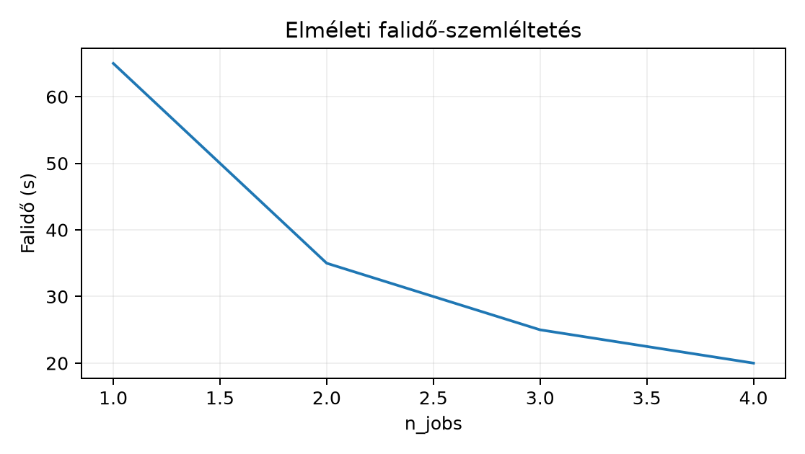

A feladatunk nem egy új modell betanítása, hanem egy kétparaméteres
keresés megtervezése úgy, hogy az adott idő- és memóriakeretbe
beleférjen. A Northstar prediktív labor egyik lépéseként egy
RandomForestClassifier két hiperparaméterét hangoljuk belső
5-szörös keresztvalidációval (CV). A gép 4 fizikai magos, 8 GiB RAM-mal.
A keret: legfeljebb 90 másodperc falóra idő (wall-clock time) és
legfeljebb 1 GiB memória.
Az input X 50 000 sorból és 60 oszlopból álló
float64 mátrix, y 50 000 elemű egész
célvektor. A rács n_estimators értékeire
[50, 100], max_features értékeire
[0.3, 0.5, "sqrt"] szól, tehát (2 \times 3 = 6)
paraméterkombináció. A megfigyelési egység e laborban egy
fit+score feladat: egy paraméterkombináció egy
belső foldon. A teljes feltáró futásszám ezért (6 \times 5 = 30).
Előzetes becslés: egy feladat CPU-ideje körülbelül 2,0 s, így a teljes CPU-munka (30 \times 2{,}0 = 60 \text{s}). Két workerrel optimistán számolva a falóra idő nagyjából (35 \text{s}), a memória pedig néhány száz MiB. A terv akkor jó, ha egy kis kontrollfutás megerősíti a 60 CPU-s nagyságrendet, mielőtt a teljes rácsot elindítjuk.
A GridSearchCV(n_jobs=...) argumentuma azt mondja meg,
hány worker folyamatot indíthat a joblib. Az n_jobs=-1 a
gépen elérhető összes logikai CPU magot jelenti, de ez nem növeli a
feladatok számát, csak a falóra idő csökkentésére ad lehetőséget.
A keresés teljes feladatszáma a következő szorzatszabállyal számolható:
[ N_{\text{fit}} = K_{\text{outer}} \cdot M_{\text{grid}} \cdot K_{\text{inner}}, ]
ahol:
GridSearchCV foldjainak
száma.Az aktuális példánkban (M_{\text{grid}}=6), (K_{\text{inner}}=5), külső CV nélkül, vagyis (N_{\text{fit}}=6 \cdot 5 = 30). Egy jövőbeli külső 5-fold hozzáadásakor (N_{\text{fit}}=5 \cdot 6 \cdot 5 = 150), tehát a szorzás nem a magok számától, hanem a kísérleti szerkezettől függ.
Ha egy feladat átlagos CPU-idejét (t_{\text{one}}) jelöli, a teljes CPU-munka:
[ T_{\text{cpu}} = N_{\text{fit}} \cdot t_{\text{one}}. ]
A párhuzamos falóra idő közelítőleg:
[ T_{\text{wall}} \approx T_{\text{overhead}} + \frac{T_{\text{cpu}}}{n_{\text{eff}}}, ]
ahol (n_{\text{eff}}) a ténylegesen hasznos párhuzamosság,
(T_{\text{overhead}}) pedig a folyamatindítás és a dispatcher költsége
másodpercben. Ha a modell CPU-kötött és minden mag szabad,
(n_{\text{eff}}) közel lehet az n_jobs-hoz; ha a memória
sávszélesség vagy az I/O telítődik, (n_{\text{eff}}) kisebb.
Például a 30 feladat (2{,}0 \text{s}/\text{feladat}) mellett 60 s CPU-munka; 2 workerrel a falóra idő (5 + 60/2 = 35 \text{s}), ha nincs oversubscription. A párhuzamosítás nem csökkenti a CPU-összeget, sőt az overhead miatt kismértékben növelheti.
A szemléltető görbe a 60 CPU-s, 5 s overheades elméleti falóra időt mutatja:

A pre_dispatch a dispatcher által előre elküldött, a
szülőfolyamat memóriájában várakozó feladatok számát korlátozza. Az int
érték közvetlen feladatszám, az alapértelmezett "2*n_jobs"
pedig az n_jobs kétszerese. Ha minden feladat nagy bemeneti
adatot visz, a magas pre_dispatch a szülőfolyamat
memóriáját növeli; a worker folyamatok memóriáját azonban nem ez, hanem
a lemásolt X, y és a felépült modell határozza
meg.
A GridSearchCV a joblib-et használja. Az alapértelmezett
loky backend újrahasznosítható munkafolyamatokat indít;
ilyenkor minden worker külön Python-interpreterrel fut. A
threading backend szálakat használ: Python-számításnál a
GIL miatt általában nem gyorsít, natív NumPy/BLAS kódban viszont hasznos
lehet. A backendet contextben lehet váltani, például
with parallel_backend("threading"): alatt. A könyv fő esete
a loky, mert a faépítés Python- és numpy-kódot is váltogat.
Nested parallelism akkor alakul ki, ha a belső becslő maga is
n_jobs-ot kap. Például GridSearchCV(n_jobs=4)
és RandomForestClassifier(n_jobs=-1) együtt egy 4 magos
gépen akár 32 aktív feldolgozó egységet is létrehozhat, amelyek
egymástól veszik el a CPU-időt. A hatékony megoldás a szintek
szétválasztása: a külső párhuzamosítás folyamatokkal, a belső modell
n_jobs=1 értékkel, vagy fordítva, attól függően, melyik ad
kisebb overheadet.
A memóriaterv képlete:
[ M_{\text{budget}} = M_{\text{base}} + n_{\text{workers}} \cdot M_{\text{worker}} + n_{\text{pending}} \cdot S_{\text{task}}, ]
ahol:
cv_results_ tárolóval,A mértékegységeket MiB-ben használjuk. A pre_dispatch
tehát csak a képlet utolsó tagját szabályozza, a worker-memóriát
nem.
A következő scripteterminálban vagy VS Code Python-környezetben futtatható. Linux/macOS esetén a projektgyökérből:
python grid_search_demo.pyWindows PowerShell esetén python grid_search_demo.py a
projektgyökérből.
# grid_search_demo.py
import time
from sklearn.datasets import make_classification
from sklearn.ensemble import RandomForestClassifier
from sklearn.model_selection import GridSearchCV
# Deterministikus kis szintetikus adat
X, y = make_classification(
n_samples=50_000,
n_features=60,
n_informative=20,
random_state=20261020,
)
X = X.astype("float64")
print("X nbytes:", X.nbytes, "y nbytes:", y.nbytes)
param_grid = {
"n_estimators": [50, 100],
"max_features": [0.3, 0.5, "sqrt"],
}
# Kontrollfutás: egyetlen fit ideje a rács egy pontján
model_single = RandomForestClassifier(
n_estimators=50, max_features=0.3, random_state=7, n_jobs=1
)
t0 = time.perf_counter()
model_single.fit(X, y)
single_dt = time.perf_counter() - t0
print(f"Egy fit: {single_dt:.2f} s; 30 feladat CPU-ideje kb. {30 * single_dt:.0f} s")
# 30 feladat, 2 loky worker, legfeljebb 3 előreküldött feladat
search = GridSearchCV(
RandomForestClassifier(random_state=7, n_jobs=1),
param_grid,
cv=5,
scoring="roc_auc",
n_jobs=2,
pre_dispatch=3,
verbose=1,
)
t0 = time.perf_counter()
search.fit(X, y)
wall_dt = time.perf_counter() - t0
print("Best:", search.best_params_, "AUC:", search.best_score_, "Wall time:", wall_dt)
print(
"Paraméterkombinációk hossza:",
len(search.cv_results_["mean_test_score"]),
"belső foldok:",
search.n_splits_,
"termékszabály:",
len(search.cv_results_["mean_test_score"]) * search.n_splits_,
)A verbose log egy lehetséges, szemléltető részlete:
X nbytes: 24000000 y nbytes: 400000
Egy fit: 1.94 s; 30 feladat CPU-ideje kb. 58 s
[Parallel(n_jobs=2)]: Using backend LokyBackend with 2 concurrent workers.
[Parallel(n_jobs=2)]: Done 30 out of 30 | elapsed: 36.2s finished
Best: {'max_features': 0.5, 'n_estimators': 100} AUC: 0.91 Wall time: 36.2
Paraméterkombinációk hossza: 6 belső foldok: 5
termékszabály: 30A cv_results_["mean_test_score"] hossza 6, mert a
keresés hat paraméterkombinációt átlagol öt belső fold fölött. A
search.n_splits_ értéke 5; a kettő szorzata 30, ami a
tényleges fit+score hívások száma. A verbose
log Done 30 out of 30 sora ezt visszaigazolja. A
kontrollfutás 1,94 s-et adott, a 30 feladatra számított
58 s CPU-munka pedig a 36 s falóra idővel konzisztens:
óvatos overheaddel számolva a 90 s keret alatt maradunk.
A párhuzamosítás determinisztikus: ugyanaz a
random_state=7 és ugyanaz a CV-split mellett a pontszám
ugyanaz, akár n_jobs=1, akár n_jobs=2 fut.
Csak a falóra idő változik, attól függően, hogy a gép éppen mit futtat.
Ezért a fenti időt és AUC-t nem nevezzük ellenőrzöttnek; a saját gépen a
verziók, a BLAS és a CPU-hűtés miatt eltérhet.
A RAM becslés példája: X 24 MiB, y 0,4 MiB.
A szülőfolyamat alapmemóriája körülbelül 120 MiB. A loky spawn minden
workerben lemásolhatja a bemeneti mátrixot és felépíti a modellt; egy
worker így jellemzően 60–100 MiB-ot használ. Két workerrel ez legfeljebb
200 MiB, három előreküldött feladat elhanyagolható mérete mellett. Az 1
GiB-os keret bőséges.
A timeit mikroszintű ismételt mérésre való; itt a
makroszintű perf_counter jobban használható, mert a fit
egyszer lefut, és a cache-hatások is érdekelnek. A cProfile
a szülőben futó dispatcher hívásait mutatja, a worker folyamatok belső
profiljához külön megoldás kell. A memóriaprofilt
memory_profiler vagy
psutil.Process().memory_info() adhat; a worker folyamatokat
a szülőén kívül külön kell mérni.
A concurrent.futures ProcessPoolExecutor
hasonló folyamatpárhuzamosságot ad, de a GridSearchCV-ben a
joblib a memmap-képességek és a pre_dispatch miatt jobban
kézben tartja a memóriát. Ha kézzel írjuk a hurkot, a joblib vagy az
executor egyaránt elfogadható, de a feladatköltséget és a
worker-memóriát akkor is előre kell becsülni.
A worker-szám és a natív számítási szálak száma együtt adja az
erőforrás-terhelést. A n_jobs növelése nem jelent
automatikus gyorsulást.
1. feladat — Értelmezés.
Egy kutató külső 5-fold CV-t futtat, és minden külső foldra külön
GridSearchCV-t indít. A belső rács 4
C-értékből és 2 penalty-ből áll, a belső CV
3-foldos. A belső GridSearchCV n_jobs=3,
pre_dispatch=6. Egy belső
fit+score feladat átlagos ideje
n_jobs=1 mellett 0,9 s, az effektív párhuzamosság
n_eff=2,5 a gépen. A memória: M_base=250 MiB,
M_worker=180 MiB, egy várakozó feladat
S_task=2 MiB. Számítsa ki a teljes feladatszámot, a becsült
CPU-időt, a falóra időt és a RAM-keretet.
2. feladat — Megvalósítás.
Adott X 400 MiB-os tömb és y 2 MiB-os vektor.
A loky spawn minden workerben lemásolja az X-et; a
workerben a fitted modell további 50 MiB-ot foglal, a szülőfolyamat
alapmemóriája 300 MiB. A pre_dispatch legfeljebb 10
feladatot tart előre, mindegyik bemenete 2 MiB. A gép 8 GiB RAM-mal
rendelkezik. Mekkora lehet legfeljebb a biztonságos n_jobs?
Adjon meg egy konkrét GridSearchCV konfigurációt, amely
kényelmesen benne marad a keretben, és írja le, miért nem érdemes a
kiszámolt maximumot választani.
3. feladat — Hibakeresés.
A tanuló egy 4 magos gépen ezt írja:
model = RandomForestClassifier(n_estimators=200, n_jobs=-1, random_state=7)
search = GridSearchCV(
model,
{"max_features": [0.2, 0.5, "sqrt"], "min_samples_leaf": [1, 5]},
cv=5,
scoring="roc_auc",
n_jobs=4,
pre_dispatch=8,
)
search.fit(X, y)Az egyérintéses RandomForestClassifier(n_jobs=1) futás
20 s volt, de ez a keresés 120 s-nál is tovább tartott. Nevezze meg a
jelenséget, magyarázza meg, miért lassul, és adjon két lehetséges
javítást.
4. feladat — Megváltozott feltétel.
A felhasználó áttér egy 16 magos gépre, de a memória sávszélesség
ugyanakkora marad. A keresett becslő lineáris modell, amely natív
BLAS-hívásokkal dolgozik. A kutató a külső GridSearchCV-t
n_jobs=4-gyel, a belső modellt azonban a BLAS
alapértelmezett szálszámával futtatja. Milyen probléma léphet fel, miért
nem biztos, hogy a nagyobb magszám gyorsabb? Adjon meg egy ellenőrizhető
új futtatási tervet, amely a környezeti változókat és az
n_jobs-ot is szabályozza.
1. megoldás.
A feladatszám a szorzatszabályból:
[ N_{\text{fit}} = 5 \cdot (4 \cdot 2) \cdot 3 = 5 \cdot 8 \cdot 3 = 120. ]
A CPU-munka:
[ T_{\text{cpu}} = 120 \cdot 0{,}9 = 108 \text{s}. ]
A becsült falóra idő (108 / 2{,}5 + T_{\text{overhead}}). Az overheadet 5 s-nak feltételezve (43{,}2 + 5 = 48{,}2 \text{s}). A RAM-büdzsé:
[ 250 + 3 \cdot 180 + 6 \cdot 2 = 250 + 540 + 12 = 802 \text{MiB}. ]
Ez elfér egy 8 GiB-os gépben, de a biztonsági tartalék miatt érdemes
a pre_dispatch-et 6 alatt hagyni, ha a worker-memória
megnő. Az ellenőrző invariáns: a pre_dispatch nem
változtatja a pontszámot, csak a szülőfolyamat várakozó memóriáját.
2. megoldás.
A RAM-korlát 8 GiB = 8192 MiB. A biztonságos n_jobs-ra:
[ 300 + n \cdot (400 + 50) + 10 \cdot 2 \le 8192, ]
[ 450n \le 8192 - 320 = 7872, ]
[ n \le 17{,}49. ]
Tehát elméletileg legfeljebb 17 worker férne el, de a 17 worker 17
processzként osztozna a CPU magokon; ha a gép kevesebb magos, a
kontextusváltás dominál, és a workerindítás overheadje is nagy. Emellett
az operációs rendszer és a Jupyter is foglal memóriát. Válasszunk
például n_jobs=8-at és pre_dispatch=8-at:
search = GridSearchCV(
RandomForestClassifier(n_jobs=1, random_state=7),
param_grid,
cv=5,
scoring="roc_auc",
n_jobs=8,
pre_dispatch=8,
)Ez a RAM-képlet szerint (300 + 8 \cdot 450 + 8 \cdot 2 = 300 + 3600 + 16 = 3916 \text{MiB}), tehát bőven a keret alatt van, és a CPU-ütemezés is mérsékelt marad.
3. megoldás.
A jelenség a nested parallelism okozta oversubscription. A külső
GridSearchCV(n_jobs=4) négy worker folyamatot indít,
mindegyik RandomForestClassifier(n_jobs=-1) pediga gép
minden magján elindíthat a faépítésben további szálakat. Egy 4 magos
gépen így akár 16 aktív feldolgozó egység verseng, a kontextusváltás és
a cache-thrash miatt a falóra idő nagyobb lehet, mint az egyérintéses
futás lineárisan várt értéke.
Javítás 1: a belső modellt n_jobs=1-re állítani, a külső
GridSearchCV n_jobs=4 megmarad. Javítás 2: ha
a belső párhuzamosítást akarjuk megtartani, a külső
n_jobs=1 legyen, és a belső fa kapja meg a magokat. A
választást kontrollméréssel kell eldönteni: 3–5 ismétlés, azonos seed,
azonos scoring. Az is fontos, hogy a pre_dispatch=8 nem
segít a nested parallelismon, mert az csak a várakozó feladatok számát
korlátozza.
4. megoldás.
A 16 magos gépen a külső 4 loky worker mindegyike a BLAS-könyvtár
alapértelmezett szálszámával is használhatja az összes magot, így akár
(4 \cdot 16 = 64) konkurens BLAS-szál is elindulhat. Ráadásul a nagyobb
magszám nem növeli a memória sávszélességet; ha a lineáris modell
memóriához kötött, a telített sáv miatt a 4 külső worker sem gyorsul
lineárisan.
Javított terv: a külső párhuzamosítást 4 loky workerre hagyjuk, a
belső becslőt n_jobs=1-re állítjuk, és a futtatás előtt a
környezeti változókat egyszálasra állítjuk:
export OMP_NUM_THREADS=1
export OPENBLAS_NUM_THREADS=1
export MKL_NUM_THREADS=1
python grid_search_demo.pyWindows PowerShellben:
$env:OMP_NUM_THREADS = "1"
$env:OPENBLAS_NUM_THREADS = "1"
$env:MKL_NUM_THREADS = "1"
python grid_search_demo.pyÍgy összesen legfeljebb 4 folyamat dolgozik, és elkerüljük a
BLAS-szálak keresztütemezését. A terv érvényességi korlátja: ha a
memória sávszélesség már 2 workernél telítődik, a 4 worker sem ad
további gyorsulást; ezért a kontrollmérést n_jobs=1,
n_jobs=2 és n_jobs=4 esetére is el kell
végezni.
A leggyakoribb hiba az, hogy a tanuló azt feltételezi: a belső
n_jobs=-1 és a külső n_jobs=4 együtt gyorsít,
mert több worker dolgozik. Valójában a worker-folyamatok és a natív
szálak nem független gyorsulást adnak, hanem osztoznak ugyanazon a négy
magon. Egy 4 magos gépen a 30 rácsfeladatos kontrollban az egyérintéses
20 s-es fitből a külső 4 workerrel 100 s CPU-munka kéne, de a tiszta
külső párhuzamosítás 30 s alatt végzett. Miután a belső fában
n_jobs=-1-et is engedtünk, a falóra idő 55 s-ra nőtt,
miközben a CPU-monitor minden magot 100%-on mutatott. A magas
CPU-kihasználtság tehát nem jelentett gyors futást; a context switch és
a cache-thrash vitte el a hasznot.
A Thread, process és könyvtári szálak
alfejezetben tanult GIL- és natív szálas döntés itt válik konkrét
konfigurációvá: a loky folyamatszintű párhuzamosítást választjuk, a
belső fa n_jobs=1-gyel fut. A CI:
kódellenőrzés és kis számítás új környezetben alfejezetből tudjuk,
hogy a CI-ben a drága tanítást külön lépésként kezeljük; ugyanez a
fegyelem indokolja, hogy a teljes rács előtt egyetlen fitet mérünk. Az
Adatteszt és numerikus teszt alfejezetben tanult
invariant-tesztelés itt a len(cv_results_) * n_splits_ = 30
termékszabály ellenőrzésében tér vissza.
Önellenőrző kérdések a labor előtt:
GridSearchCV összes
fit hívásának számát indítás előtt?pre_dispatch a várakozó feladatok vagy a worker
folyamatok számát szabályozza?n_jobs-a és a külső
GridSearchCV n_jobs-a összeszorzódik-e?A párhuzamos keresés indítása előtt a szorzatszabállyal számítsuk ki
a teljes feladatszámot, az egyfeladatos fitből becsüljük a CPU-időt, és
a worker- plusz dispatcher-memóriából becsüljük a RAM-keretet. A joblib
loky backend folyamatokat indít; a pre_dispatch a
szülőfolyamat várakozó sorát korlátozza, nem a worker-memóriát. A nested
parallelism elkerülése érdekében a belső estimator n_jobs=1
legyen, ha a külső keresés párhuzamos. A kontrollfutás egyetlen fit
mérése és a 30 feladatos termékszabály ellenőrzése megbízhatóbb döntést
ad, mint a CPU-monitor figyelése. A következő lépés, az Optimálás változatlan jelentéssel, ezt a mérést
használja fel változatlan jelentés melletti optimalizáláshoz.